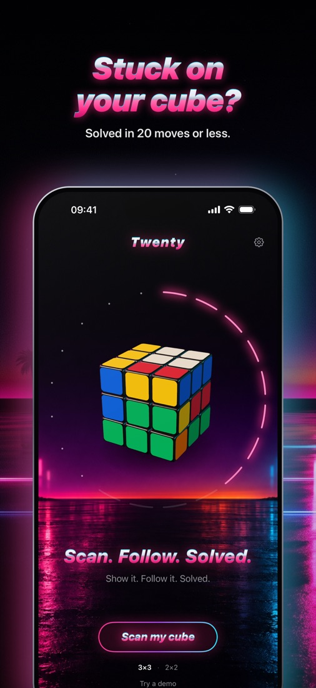
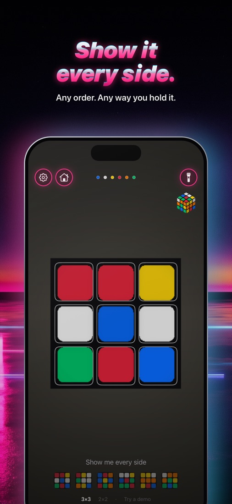
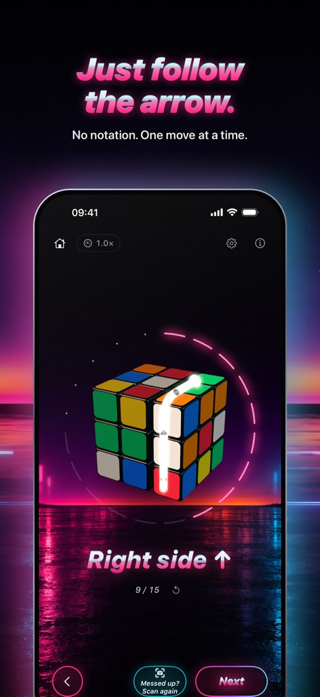
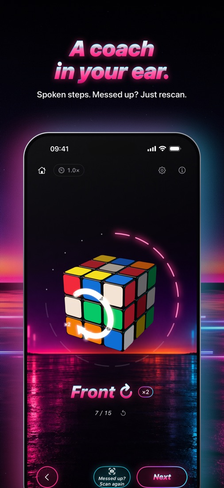
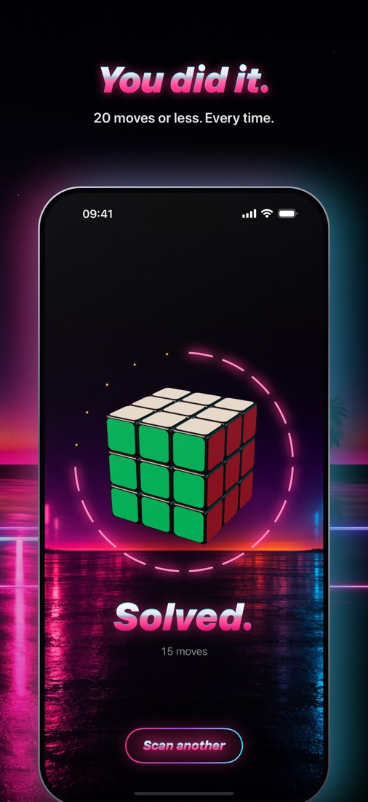

Scan. Follow. Solved.
Stuck on your cube? Show Twenty every side, then follow one big glowing arrow at a time. Every 3×3 solved in 20 moves or less.
How it works
- Scan – show the camera every side, in any order and any rotation. Wrong color? One tap fixes it.
- Follow – one move at a time on a 3D cube with a big arrow. No notation to learn. A voice coach (female or male) speaks every step.
- Solved – 20 moves or less for any 3×3, 11 moves or less for the 2×2 mini cube.





Private by design
Twenty works fully offline. The camera image is read on your iPhone and never leaves it. No account, no ads, no tracking.